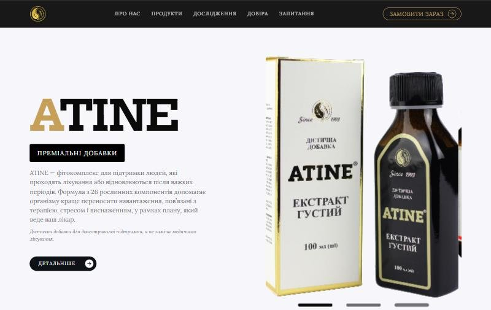
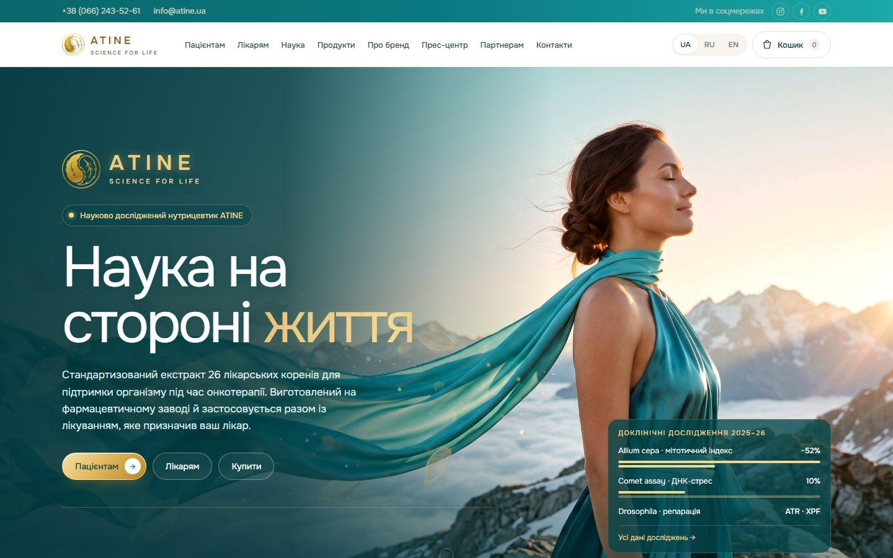
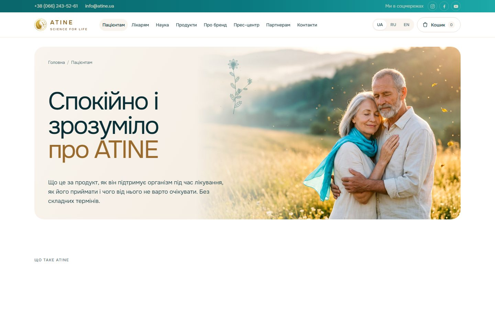
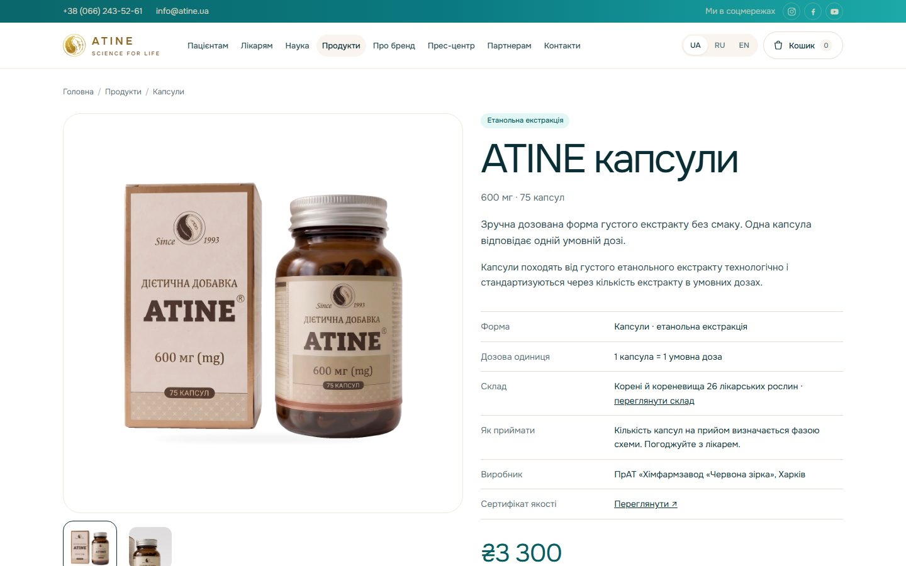
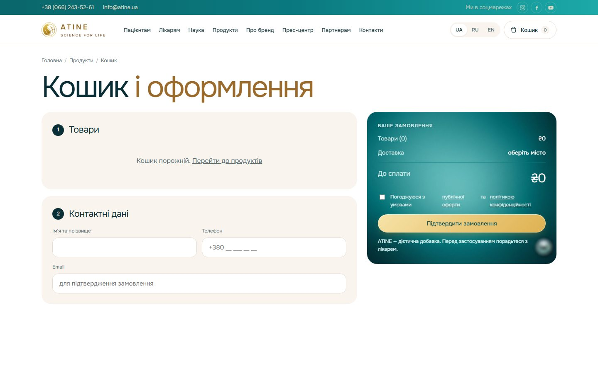
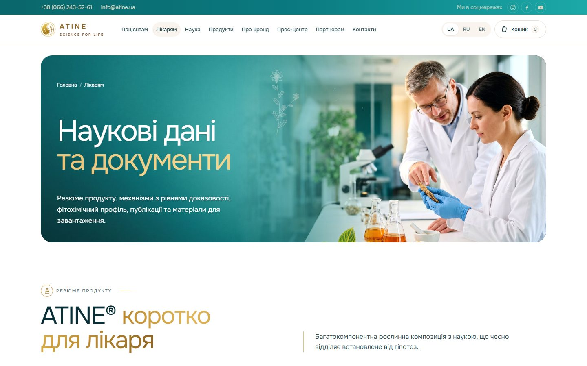
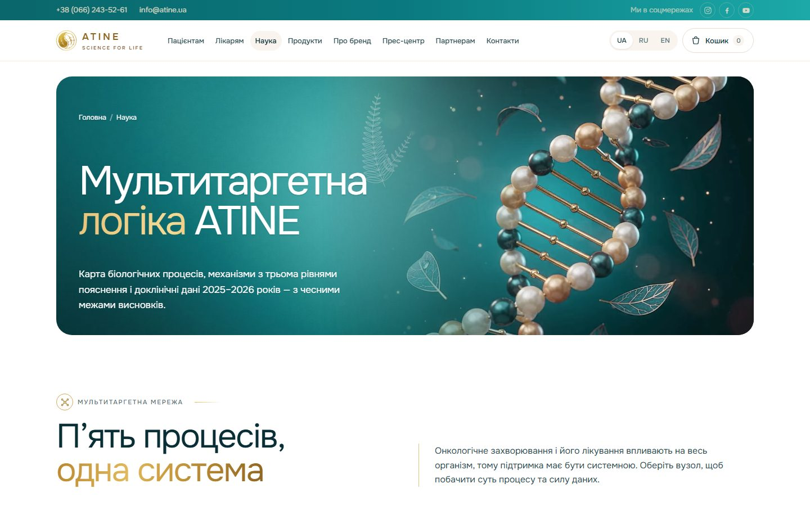
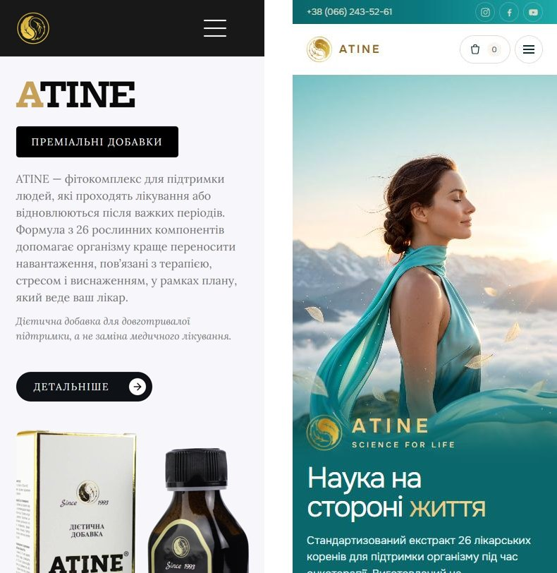

Коротко
Новый сайт ATINE готов и работает на new.atine.ua. Это цифровой дом бренда: 21 страница в фирменном стиле, магазин с корзиной, оплатой и доставкой Новой Почтой, отдельные разделы для пациента и врача, три языка. Старый atine.ua пока работает как раньше, почта @atine.ua тоже.
Чтобы запустить продажи, нужны три вещи от вас: юридическая проверка сайта с юристом, бизнес-кабинет Новой Почты и финальные цены. Доступ к домену у нас уже есть, Telegram-чат для заказов создадим сами. Заявку в WayForPay подаём только после юридической проверки, чтобы платёжная система не отказала. Форму заявок подключаем к Telegram один раз, при окончательном переносе сайта на atine.ua: иначе её пришлось бы настраивать дважды, сначала на временный адрес, потом на основной. Полный список — в разделе «Что осталось сделать».
| Старый atine.ua | Новый atine.ua | |
|---|---|---|
| Формат | 1 страница-лендинг | 21 страница |
| Покупка | заявка → ждать звонка | корзина → оплата картой → Новая Почта |
| Для врача | ничего | 3 раздела: Лікарям, Наука, Дослідження |
| Языки | 1 (RU и EN — копии украинского) | UA / RU / EN |
| Фирменный стиль | чёрно-белый шаблон | градиент ATINE, золото, своё видео и фото |
| Юридическая часть | нет | оферта, политика, возврат, данные ФОП |
Старый atine.ua: подробный разбор
Старый сайт не справляется ни с одной задачей бренда: не продаёт, не ищется, не убеждает врачей и создаёт юридические риски. Всё ниже проверено на живом сайте. По каждому пункту: что видим, чем это плохо и как это решено в новом сайте.
1. Одна страница вместо сайта
- Что видим
- Меню «Про нас / Продукти / Дослідження / Довіра / Запитання / Замовити» только прокручивает одну страницу. Адреса atine.ua/products, /about, /contacts, /privacy выдают ошибку.
- Чем плохо
- Нельзя переслать ссылку на конкретный продукт или схему приёма. Рекламу на врачей и на пациентов приходится вести на одну и ту же страницу.
- В новом сайте
- 21 отдельная страница со своим адресом: каждая форма продукта, схемы приёма, разделы для пациента, врача, партнёра и прессы.
2. Продаж нет
- Что видим
- Кнопка «Замовити» открывает форму с почтой и телефоном, в пяти формах из шести даже без имени. Нет корзины, количества, оплаты, доставки. После заявки человек ждёт звонка в Пн–Пт, 9:00–18:00.
- Чем плохо
- Заявки вечером и в выходные ждут до понедельника, часть клиентов за это время передумает. Менеджер каждому звонит и вручную уточняет форму, количество и адрес.
- В новом сайте
- Заказ в 4 шага без звонка: товары, контакты, отделение Новой Почты, оплата картой. Менеджер получает готовый заказ в Telegram.
3. Цены и формы выпуска не объяснены
- Что видим
- Цены идут лесенкой: фиточай ₴1100, таблетки ₴2200, капсулы ₴3300, густой экстракт ₴4400, сухой ₴5500. По каждой форме есть только один абзац в слайдере.
- Чем плохо
- Ровная лесенка выглядит как заглушка. Пациент не понимает, чем формы отличаются и почему одна дороже другой в 5 раз.
- В новом сайте
- У каждой формы своя страница: фасовка, доза, производитель, сертификат, цена. Тест «Яка форма вам підходить» и таблица дозовых эквивалентов между формами.
4. Языки — фиктивные
- Что видим
- Адреса atine.ua/ru и atine.ua/en открываются, но все заголовки и тексты на них украинские. Переключателя языка нет.
- Чем плохо
- Родные пациентов за границей и иностранные партнёры не могут прочитать сайт. Google видит три копии одной страницы и понижает такие сайты.
- В новом сайте
- Полный перевод на русский и английский, более 1 100 фраз на каждый язык. Переключатель UA / RU / EN в шапке каждой страницы.
5. Google сайт почти не видит
- Что видим
- Заголовок страницы — одно слово «Atine». Нет описания для поиска, язык страницы не указан, нет файлов robots.txt и sitemap.xml. Для превью ссылки в Telegram и Facebook заполнены только 2 тега, без картинки и описания.
- Чем плохо
- По запросам «атине капсули», «атине схема прийому», «атине лікарям» поисковику нечего показать. Ссылка в мессенджере выглядит как голый адрес.
- В новом сайте
- У каждой страницы свой заголовок и описание, например «ATINE капсули · 600 мг · 75 капсул». Robots.txt и карту сайта добавим при запуске.
6. Юридические риски
- Что видим
- На главной отзывы с обещаниями лечения: «зменшення пухлинних вузлів», «доведена цитотоксичність», «абсолютно безпечним». Один отзыв описывает отказ от химиотерапии на 4-й стадии. Форма ссылается на «політику Atine», которой нет. Нет оферты, данных продавца и условий возврата.
- Чем плохо
- Для диетической добавки обещания лечения — повод для претензий по закону о рекламе. Без оферты и данных продавца WayForPay не подключит оплату. Отзывы противоречат дисклеймеру в подвале самого сайта.
- В новом сайте
- Публичная оферта, политика конфиденциальности, возврат, данные ФОП. На каждой странице предупреждение, что это добавка. Отзыв про отказ от химиотерапии убран, остальные переписаны без обещаний лечения.
7. Дыры в технике
- Что видим
- Сайт работает в режиме отладки: вместо страницы «не найдено» выдаёт служебную ошибку фреймворка Symfony, а atine.ua/ua/order открывает полный отладочный отчёт. Исследования и патенты лежат на чужом Google Drive. В подвале стоит подпись разработчика со ссылкой на его личный Instagram.
- Чем плохо
- Отладочные страницы показывают устройство сайта взломщикам. Документы пропадут, если владелец Google Drive их удалит. Бренд бесплатно рекламирует подрядчика.
- В новом сайте
- Статические страницы без серверного приложения — ломать нечего. Монография и сертификаты хранятся на самом сайте. В подвале только «© 1993–2026 ATINE®. Formula developed by Doctor Bombushkar».
8. Тексты с ошибками и остатками шаблона
- Что видим
- Оборванная фраза «Історія ATINE Історія в 1993 році…». Пустой 2009 год в таймлайне. Опечатки «Реальній досвід» и «сировотки». Английское «treating team» в украинском тексте. FAQ обещает ответы про «підтримку психічного здоровʼя» — остаток чужого шаблона.
- Чем плохо
- Для продукта, который опирается на науку, ошибки в тексте сразу роняют доверие, особенно у врачей.
- В новом сайте
- Тексты написаны заново по ТЗ для копирайтера и монографии, отдельно для пациента и для врача.
9. Для врача — ничего
- Что видим
- Нет раздела для врачей, состава по растениям, сертификатов, схем приёма и научного совета.
- Чем плохо
- Врач — главный канал доверия для онкопациента. Чтобы рекомендовать ATINE, ему приходится звонить и просить материалы.
- В новом сайте
- Три раздела для врача: «Лікарям», «Наука», «Дослідження». Подробнее — в следующем разделе.
10. Дизайн — безликий шаблон
- Что видим
- Чёрный, белый и серый, единственный акцент — приглушённое золото. Три разных шрифта (Lora, Hepta Slab, Inter), в 42 крупных блоках текст падает в обычный Arial. Картинки — 3 фото упаковки и типовые иконки. Своего видео нет, только 4 превью YouTube.
- Чем плохо
- Сайт не похож ни на упаковку, ни на брендбук. Поменяй логотип — и никто не догадается, чей он.
- В новом сайте
- Фирменный градиент ATINE с золотом и бронзой, один современный шрифт Onest, более 100 своих изображений и своё видео.
Так старый сайт выглядит при открытии:

Новый atine.ua: страница за страницей
У каждой аудитории свой вход: пациент сразу попадает к выбору и заказу, врач — к данным и документам, партнёр и пресса — в свои разделы.
Главная
new.atine.ua — витрина бренда и развилка по аудиториям.
- Заставка с эмблемой ATINE и золотой полосой загрузки.
- Первый экран «Наука на стороні життя» с кнопками «Пацієнтам», «Лікарям», «Купити» и карточкой доклинических данных 2025–26.
- Блок «Хто ви?» — пациент, родственник, врач или партнёр.
- Три направления поддержки, карточка «Формула ATINE» с видео жемчужной ДНК, каталог 5 форм, монография с кнопкой «Завантажити PDF», документы, эксперты, новости, видео-манифест «26 коренів».
- Блок «Що вже зроблено і що далі» — путь от клинических наблюдений 1993 года до исследований 2025–26.

Пацієнтам
Пацієнтам — «Спокійно і зрозуміло про ATINE».
- Три простые аналогии: «Не ліки, а опора», «26 коренів — як оркестр», «Ефект накопичується».
- Ответы для пациентов и родных: дозировка, совместимость с лечением, безопасность.
- Блок «Залишилися питання? Поговоримо» с телефоном и мессенджерами.

Продукти и 5 страниц форм
Продукти — «Одна формула, п’ять форм».
- Объяснение двух экстракционных веток: фиточай как база и густой экстракт с производными формами.
- Тест «Яка форма ATINE підходить вам?» из трёх вопросов: кто вы, какая форма удобнее, принимали ли раньше. В ответ — рекомендация, например «Фіточай — м’який старт».
- У каждой из 5 форм своя страница: фото на белом фоне, фасовка, дозовая единица, состав, производитель, сертификат качества, цена и расчёт доставки по Украине.

Схеми прийому
Схеми прийому — базовая схема, дозовые эквиваленты между формами, сколько доз за один приём. Страницу удобно открыть на приёме и показать врачу или переслать пациенту.
Кошик
Кошик — заказ в 4 шага: товары → контакты → доставка (город и отделение из базы Новой Почты) → оплата картой. Корзина запоминает товары, если закрыть сайт. Согласие с офертой и политикой — одной галочкой.

Лікарям
Лікарям — «Наукові дані та документи».
- «ATINE® коротко для лікаря» — справка на один экран.
- Мишени и уровень доказательности, результаты GC–MS анализа экстракта.
- Ключевые работы, документы в PDF, ответы из монографии, форма для врачей.

Наука
Наука — «Мультитаргетна логіка ATINE».
- «П’ять процесів, одна система» — интерактивная схема: нажимаешь на процесс и видишь суть и силу данных.
- «Від клітини до висновку», «Що встановлено, а що лишається гіпотезою».
- Все 26 растений состава карточками с иллюстрациями.

Дослідження
Дослідження — «Бібліотека досліджень»: 5 научных работ с DOI, данные по клеточным линиям U-138 MG и HEK 293, тесты Allium cepa, Comet assay и Drosophila, блок «Як читати доказову базу», монография в PDF.
Експерти
Експерти — Doctor Bombushkar и научная рада: А. Гоженко, В. Вастьянов, Б. Насибуллин, И. Попович, Н. Бадюк, В. Жуков. Отдельно — лаборатории, производство и научные учреждения.
Про бренд
Про бренд — «Від народної практики до доказової науки»: 33 года одного состава, жизнеописание Игоря Стефановича Бомбушкара, патенты, сертификат на каждую форму, отзывы.
Партнерам
Партнерам — цифры бренда (патенты, юрисдикции ТМ, годы на рынке, формы выпуска, тома монографии) и отдельно для дистрибьюторов, аптечных сетей, клиник и инвесторов. В конце — форма «Обговорімо співпрацю».
Прес-центр
Прес-центр — новости (запуск сайта, серия НИР, пять научных работ, регистрация ТМ в ЕС), публикации в СМИ и награды. Блоки СМИ и наград пока ждут ваших материалов.
Контакти и юридические страницы
- Контакти — телефон, почта, мессенджеры, форма «Напишіть нам», блок «Продавець».
- Правова інформація, Публічна оферта, Політика конфіденційності — данные ФОП, условия заказа, цены, доставка, оплата, возврат, медицинский дисклеймер.
- Фирменная страница 404 вместо служебной ошибки.
На телефоне: старый и новый
Большинство пациентов и их родных заходят с телефона. Новый сайт сверстан под телефон отдельно: свои вертикальные фото и видео, доработки под iPhone, Android и встроенные браузеры мессенджеров. Слева старый сайт, справа новый.

Интерактив: что можно сделать на сайте
На старом сайте можно было только читать и оставить телефон. На новом человек сам подбирает форму, считает дозу и доставку, изучает состав и скачивает документы.
| Функция | Где | Что даёт |
|---|---|---|
| Тест «Яка форма ATINE вам підходить» | Главная, Продукти | 3 вопроса: кто вы, какая форма удобнее, принимали ли раньше. В ответ — готовая рекомендация и ссылка на форму |
| «Хто ви?» | Главная | пациент, родственник, врач или партнёр выбирает свой путь и сразу видит нужные разделы |
| Калькулятор дозы | Схеми прийому | складывает чай, таблетки, капсулы и экстракт в одну дозу за приём и предупреждает, если вышло больше 3,5 дозы |
| График курса | Схеми прийому | наглядно показывает фазы приёма и дозу в каждой. Три схемы на выбор: базовая, расширенная и врачебная |
| Расчёт доставки | страница каждой формы, Кошик | выбор города и отделения из базы Новой Почты, стоимость доставки до заказа |
| Корзина | все страницы | количество кнопками «− / +», заказ в 4 шага, товары сохраняются, если закрыть сайт |
| Схема механизмов | Главная, Наука | переключение механизмов 01–05 стрелками или свайпом, два уровня объяснения: простой для пациента и подробный для врача |
| Карта процессов | Главная, Наука | нажимаешь на узел схемы и видишь суть процесса и уровень данных |
| Гербарий 26 растений | Наука | нажимаешь на растение (Бадан, Барбарис…) и открывается карточка: иллюстрация, латинское название, роль в формуле |
| Библиотека документов с фильтром | Дослідження, Лікарям | фильтр по типу исследования: обзоры, in vitro, in vivo и другие, со счётчиком работ |
| Монография в PDF | Главная, Лікарям, Дослідження | кнопка «Завантажити PDF» — книга целиком, без запросов и чужих ссылок |
| Сертификаты в полном размере | Про бренд, карточки форм | сертификат открывается поверх страницы, можно рассмотреть и скачать |
| Вопросы и ответы | Пацієнтам, Лікарям, Наука | раскрывающиеся блоки: читаешь только свой вопрос |
| Видео-манифест | Главная | запускается по нажатию прямо на сайте, не утяжеляет загрузку |
| Языки UA / RU / EN | шапка каждой страницы | весь сайт переключается одним нажатием, выбор запоминается |
| Живая анимация | все страницы | золотые частицы тянутся к курсору, листья и ботанические линии прорисовываются при прокрутке, цифры считаются |
Что сделано
С 22 октября сайт прошёл путь от прототипа до готового магазина.
Этап 1. Прототип и структура (22–27.10)
- Прототип сайта и первая версия брендбука.
- Три языка: украинский, русский, английский, с переключателем.
- Гербарий: 26 растений состава с семейством, частью растения и ключевым веществом.
- Многостраничный сайт-магазин по ТЗ: разделы, корзина, доставка Новой Почтой, схемы приёма.
- Разделы «Пацієнтам» и «Лікарям», Doctor Bombushkar, монография, вопросы врача с ответами из монографии.
- Тест «Яка форма вам підходить», интерактивная схема механизмов, пресс-центр с премией АМН Украины.
- Видео-манифест прямо на сайте, без YouTube: короткая версия 1:44 без лечебных утверждений.
- Работа на iPhone и Safari: видео запускается сразу, загрузка меньше 1 секунды.
Этап 2. Документы и ваши правки (28.10–02.11)
- Сертификаты качества на все 5 форм: галерея в «Про бренд» и скачивание для врачей.
- Правки по вашему списку: новости, соцсети, второй производитель «Ліктрави», миссия, жизнеописание доктора, расшифровка ATINE, «Експерти та наукова рада», фото без обрезанных лиц.
- Сайт перенесён на new.atine.ua и закрыт от поисковиков до запуска. Старый сайт и почта @atine.ua работают как раньше.
- Подготовлен пакет документов и текст заявки для WayForPay.
Этап 3. Фирменный стиль и визуал (02–11.11)
- Палитра по градиенту, который утвердил Alex: бирюза от светлой к глубокой, золото и бронза. Применена ко всему сайту.
- Изображения от Alex и новые изображения в едином стиле (Google Flow) на главной, баннерах разделов и в «Науке».
- Видео «Формула ATINE» с вращающейся жемчужной ДНК, фото Doctor Bombushkar в лаборатории, фирменные фоны плашек.
- Заставка с эмблемой и золотой полосой загрузки на всех страницах.
- Брендбук ATINE в PDF: логотипы в 5 вариантах, палитра, стиль изображений, примеры сайта.
- Политика конфиденциальности и публичная оферта с данными ФОП, ссылки в подвале и в корзине.
Этап 4. Монография, продукция и отзывы (14.11)
- Новая обложка монографии «Дієтична добавка ATINE® у контексті нутритивної та супровідної допомоги онкопацієнтам». Изображение сгенерировано заново, текст обложки ваш, без изменений.
- Монографию можно скачать в PDF на главной, в «Лікарям» и «Дослідження».
- Новые фото всех 5 препаратов на белом фоне, в одном ракурсе и размере.
- Отзывы на «Про бренд» смягчены на трёх языках, без обещаний лечения.
- Проведён разбор старого сайта и подготовлен этот отчёт.
Что осталось сделать
Сайт готов, запуск продаж ждёт ваших данных и юридической проверки.
Нужно от вас для запуска продаж
Без этих пунктов сайт не может принимать заказы и оплату.
| Что нужно | Зачем | Статус |
|---|---|---|
| Новая Почта: бизнес-кабинет на ФОП и API-ключ (передать лично, не в общий чат), данные отправителя, вес и размеры упаковок | точный расчёт доставки и оформление отправок | Ждём |
| Финальные цены на все 5 форм | цены в каталоге и корзине | Ждём |
| Юридическая проверка сайта с юристом: оферта (срок возврата денег, отмена до отправки, возврат добавок), политика конфиденциальности, данные продавца, тексты о продукте | сначала закрываем юридическую сторону и только потом подаёмся в WayForPay: платёжная система может отказать или заблокировать магазин из-за недочётов | Ждём |
| Подтверждение новых формулировок отзывов от авторов (Гоженко и Наталия Сергеевна) | отзывы смягчены, и авторы должны согласиться с текстом | Ждём |
Нужно от вас по контенту
Сайт работает и без этого, но так он станет полнее и сильнее.
| Что нужно | Зачем | Статус |
|---|---|---|
| Пятый продукт Nectar of Life: название, форма, цена, состав, фото, сертификат | добавить в каталог и в магазин | Ждём |
| Фото и регалии экспертов (Попович, Бадюк, Жуков) и их согласие на публикацию | страница «Експерти» | Ждём |
| Капсулы: 600 или 666 мг? | сейчас на сайте стоит 600 мг | Ждём |
| Авторы научных публикаций | страница «Дослідження» | Ждём |
| Публикации в СМИ, интервью, дипломы и награды | в «Прес-центре» сейчас стоят шаблоны карточек | Ждём |
| Фото лаборатории или врачей | раздел «Лікарям» — реальные фото вместо сгенерированных | Ждём |
| Утвердить смягчённый текст миссии | страница «Про бренд» | Ждём |
| Утвердить финальную версию видео-манифеста | блок «Маніфест» на главной | Ждём |
С нашей стороны
Каждый пункт делаем сразу, как только получим нужное от вас.
| Задача | Когда | Статус |
|---|---|---|
| Создать Telegram-чат для заказов и подключить к нему форму заявок | при окончательном переносе на atine.ua, вместе с доменом: настраиваем один раз, сразу на основном адресе | Ждём |
| Подключить оплату WayForPay и пройти проверку магазина | после юридической проверки: подаём заявку и подключаем оплату | Ждём |
| Подключить кабинет Новой Почты к корзине | после получения API-ключа | Ждём |
| Перенести сайт на atine.ua, добавить robots.txt и карту сайта, открыть для Google | при запуске продаж, доступ к домену уже есть | Ждём |
| Тестовый заказ от корзины до оплаты и отправки | после подключения оплаты и доставки | Ждём |
| Добавить Nectar of Life, экспертов, СМИ и награды, новые фото | по мере получения материалов | В работе |